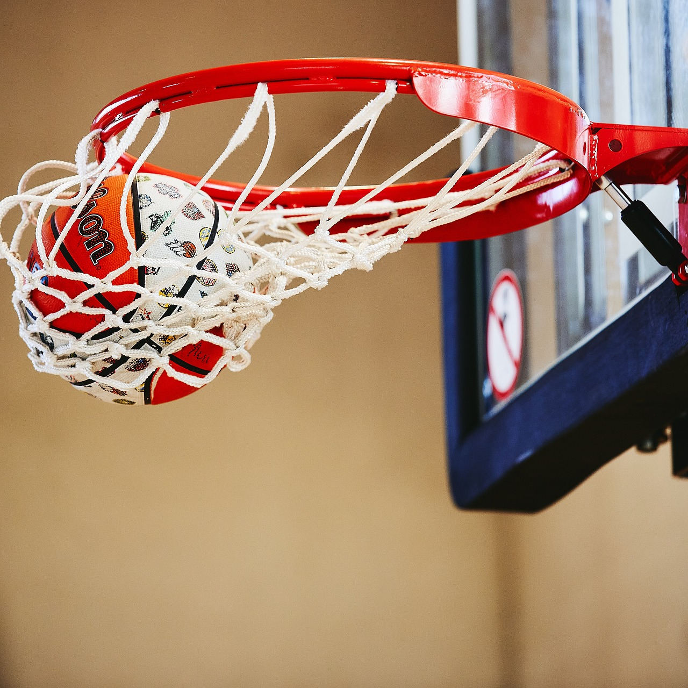

Bienvenue dans le monde du Basketball
SOMMAIRE:
Définition:
Le basket-ball est un sport qui oppose 2 équipes de 5 joueurs durant 4 périodes de 10 minutes, que l'on appelle « quart-temps ».L'objectif est de marquer plus de points que l'adversaire. Il n'y a jamais de match nul en basket. En cas d'égalité à la fin du temps réglementaire (il n'y a pas d'arrêts de jeu, une sonnerie retentit exactement à la fin des 10 minutes de chaque quart-temps), on joue une prolongation de 5 minutes. En cas de score de parité après cette prolongation, on en joue une nouvelle, et ainsi de suite, jusqu'à ce que le vainqueur émerge. Les points se marquent en faisant passer le ballon dans un anneau situé à 3,05 mètres du sol.
Paniers à 1 , 2 et 3 points au basket
Le nombre de points marqués dépend de la distance à laquelle le lancer est effectué. Tout lancer effectué au-delà de la ligne des 3 points, située à 6 m 75 de l'anneau, en rapporte donc 3. Tout autre panier rapporte 2 points, sauf s'il s'agit d'un lancer franc, consécutif à une faute. Le lancer franc rapporte un point. 
Les règles principales du basket
- Les joueurs sont obligés de faire rebondir le ballon, ce qu'on appelle dribler, au moins une fois tous les 2 pas. En cas de manquement à cette règle, l'arbitre siffle un « marché ».
- L'équipe qui a la possession du ballon est également obligée de tenter sa chance au panier toutes les 24 secondes. Cette règle a évidemment pour objectif d'empêcher l'équipe qui mène au score de garder indéfiniment la possession.
- Le ballon ne peut être joué qu'avec les mains.
- Les contacts sont interdits. En cas de contact, c'est le défenseur qui est sanctionné d'une faute, sauf si le défenseur était statique : on parle alors d'une faute offensive.
- Un joueur qui a commis 5 fautes doit être remplacé et ne peut plus prendre part au match. Lorsqu’une faute est commise sur un joueur qui s'apprête à tirer, il reçoit 2 lancers francs, 3 s'il s'agissait d'un tir à 3 points.
- Règles Officielles de la FIBA